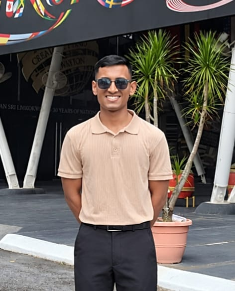

GET TO KNOW ME
About Anik Dey.
A little about my background, interests and journey.

MY JOURNEY
Learning, creating and growing.
I'm a student at Limkokwing University of Creative Technology in Malaysia, studying Software Engineering with Multimedia.
I enjoy exploring technology, learning programming languages and developing practical projects. I see each project as an opportunity to improve my skills and understand how digital products are created.
My Interests
My Goal
My goal is to continue developing my technical skills, build meaningful projects and gain practical experience in software development.
View My Projects